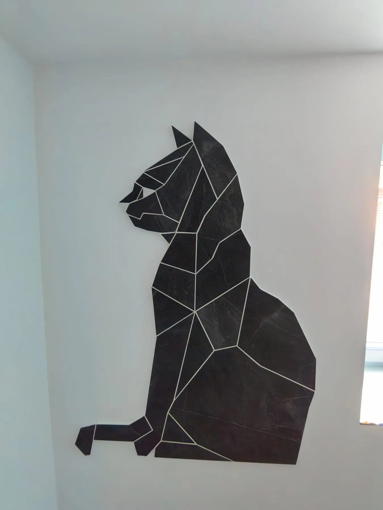
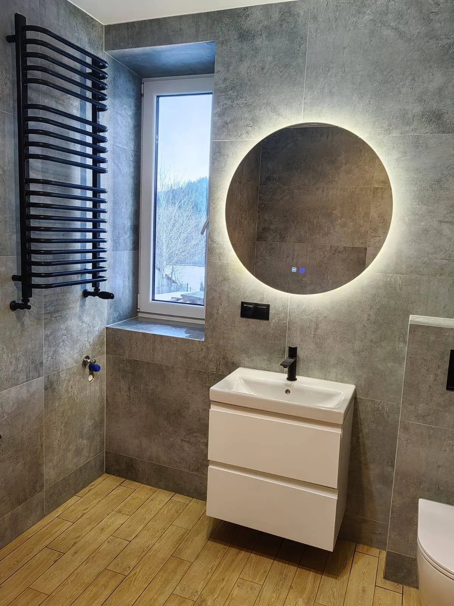
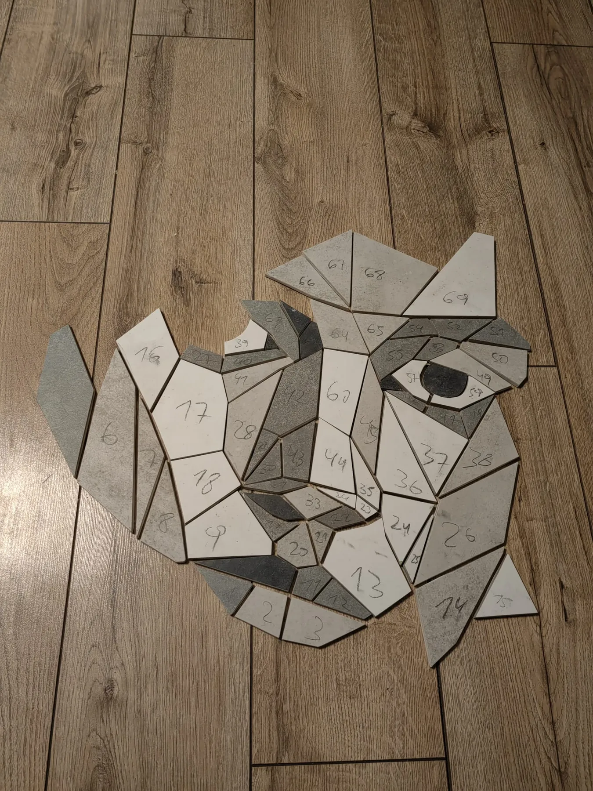
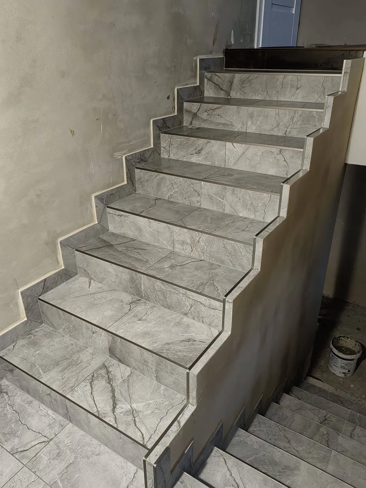
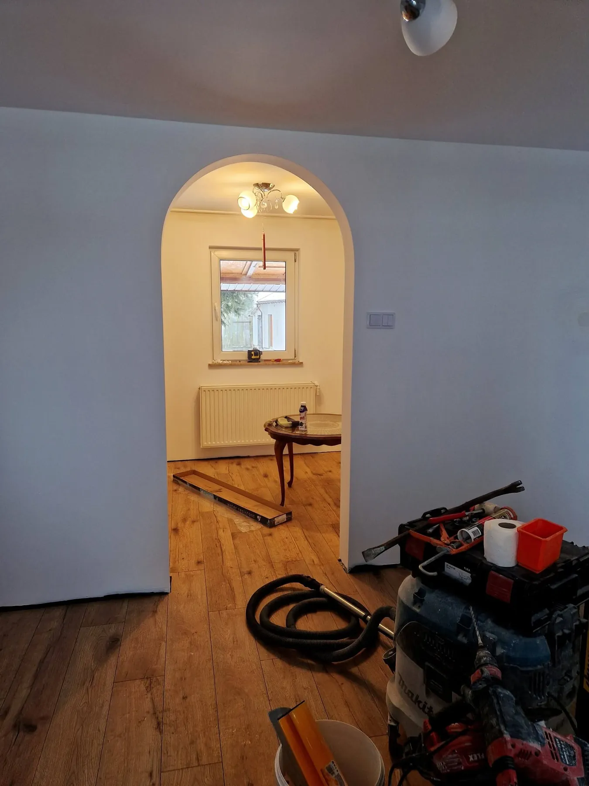
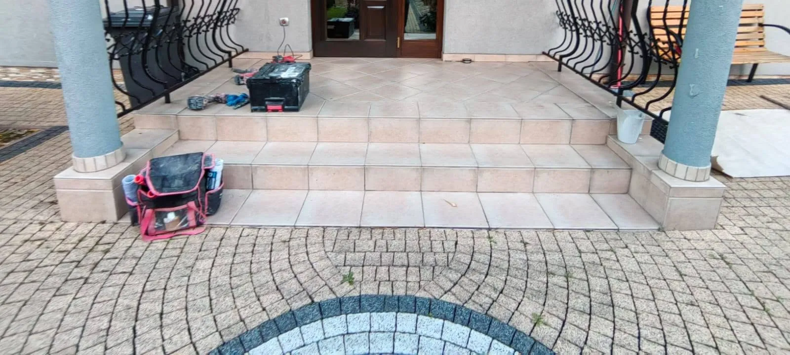
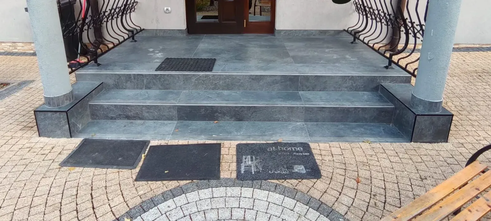
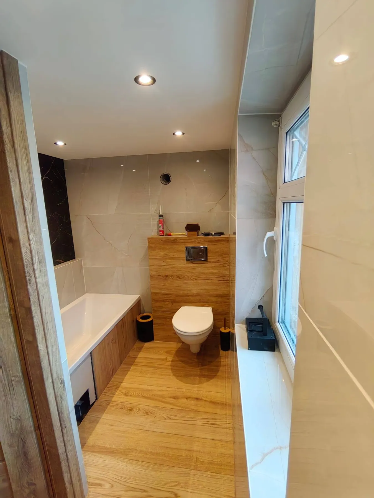

Łazienki & mozaiki z płytek
DK-FLIZ to usługi glazurnicze i wykończeniowe. Specjalizujemy się w kompleksowym wykończeniu łazienek oraz w mozaikach z płytek wykonywanych na podstawie obrazów — fachowo, terminowo i dokładnie, od pierwszej płytki do ostatniego detalu.
- Bezpłatna wycena
- Kraków · Wadowice · Sucha Beskidzka
- Mozaiki według obrazu
Dwie specjalności
Najwięcej czasu poświęcamy łazienkom: płytkom wielkoformatowym, odpływom liniowym, wnękom z podświetleniem LED i zabudowom stelaży. Drugą specjalnością są mozaiki z płytek — postacie i motywy układane z ręcznie ciętych elementów na podstawie obrazu lub zdjęcia.

Mozaika z płytek na podstawie obrazu
Każdy projekt zaczyna się od obrazu lub zdjęcia. Motyw dzielimy na pola, a następnie wycinamy z płytek i numerujemy kolejne elementy. Na ścianie lub posadzce składają się one w jeden obraz, a fuga wyznacza jego kontur.
Realizacje
Zobacz wszystkie →Zobacz z bliska
Zakres prac
Prowadzimy całe wykończenie albo wchodzimy na wybrany etap.

01Łazienki pod klucz
Przygotowanie ścian, płytki ścienne i podłogowe, odpływy liniowe, wnęki i półki z podświetleniem oraz biały montaż.

02Mozaiki z płytek
Mozaiki artystyczne na ścianę lub posadzkę, wykonywane według obrazu, zdjęcia albo własnego pomysłu klienta.

03Schody i tarasy
Okładzina schodów wewnętrznych i zewnętrznych oraz tarasów z płytek gresowych, z wykończeniem krawędzi i cokołów.

04Wykończenia wnętrz
Zabudowy z płyt gipsowo-kartonowych, łuki i ścianki działowe oraz posadzki z płytek wielkoformatowych.
Przesuń i porównaj
Schody wejściowe i podest: wymiana okładziny wraz z wykończeniem krawędzi.


PrzedPoProfesjonalne podejście do klienta, fachowe doradztwo oraz terminowa realizacja zlecenia. Prace zostały wykonane starannie i z dbałością o detale, a kontakt na każdym etapie współpracy był bezproblemowy.Agnieszka K. · opinia na Facebooku
Krok po kroku
- 01
Rozmowa
Zadzwoń pod numer 730 230 019 i opisz zakres prac. Najwięcej da się ustalić w bezpośredniej rozmowie.
- 02
Oględziny i wycena
Przyjeżdżamy na miejsce, mierzymy pomieszczenie i omawiamy płytki, rozwiązania oraz koszt prac.
- 03
Termin
Ustalamy datę rozpoczęcia prac i ich harmonogram, tak aby klient wiedział, czego i kiedy się spodziewać.
- 04
Realizacja i odbiór
Pracujemy do momentu, w którym każdy detal jest dopracowany, a klient zadowolony z efektu.
Rób tak, jak dla siebie
DK-fliz Usługi Glazurnicze i Wykończeniowe to firma z Makowa Podhalańskiego, specjalizująca się w kompleksowym wykończeniu łazienek oraz w mozaikach z płytek. Wykonujemy także remonty mieszkań i domów, schodów oraz tarasów.
Od października 2026 r. realizujemy usługi glazurnicze i wykończeniowe na terenie województwa małopolskiego.

Porozmawiajmy o Twojej łazience
730 230 019„Rób tak, jak dla siebie” — motto DK-FLIZ